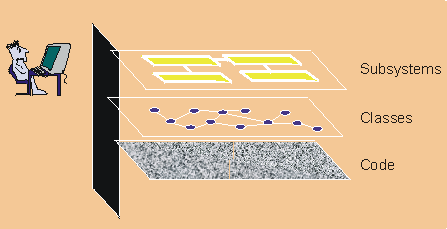

| Visual Modeling |
|
| Related Elements |
|---|
|
 Visual modeling raises the level of abstraction What is Visual Modeling?Visual modeling is the use of semantically rich, graphical and textual design notations to capture software designs. A notation, such as UML, allows the level of abstraction to be raised, while maintaining rigorous syntax and semantics. In this way, it improves communication in the design team, as the design is formed and reviewed, allowing the reader to reason about the design, and it provides an unambiguous basis for implementation. Why Do We Model?A model is a simplified view of a system. It shows the essentials of the system from a particular perspective and hides the non-essential details. Models can help in the following ways:
Aiding understanding of complex systemsThe importance of models increases as systems become more complex. For example, a doghouse can be constructed without blueprints. However, as one progresses to houses, and then to skyscrapers, the need for blueprints becomes pronounced. Similarly, a small application built by one person in a few days may be easily understood in its entirety. However, an e-commerce system with tens of thousands of source lines of code (SLOCs)-or an air traffic control system with hundreds of thousands of SLOCs-can no longer be easily understood by one person. Constructing models allows a developer to focus on the big picture, understand how components interact, and identify fatal flaws. Some examples of models are:
Modeling is important because it helps the team visualize, construct, and document the structure and behavior of the system, without getting lost in complexity. Exploring and comparing design alternatives at a low costSimple models can be created and modified at a low cost to explore design alternatives. Innovative ideas can be captured and reviewed by other developers before investing in costly code development. When coupled with iterative development, visual modeling helps developers to assess design changes and communicate these changes to the entire development team. Forming a foundation for implementationToday many projects employ object-oriented programming languages to obtain reusable, change-tolerant, and stable systems. To obtain these benefits, it's even more important to use object technology in design. The Rational Unified Process (RUP) produces an object-oriented design model that is the basis for implementation. With the support of appropriate tools, a design model can be used to generate an initial set of code for implementation. This is referred to as "forward engineering" or "code generation". Design models may also be enhanced to include enough information to build the system. Reverse engineering may also be applied to generate design models from existing implementations. This may be used to evaluate existing implementations. "Round trip engineering" combines both forward and reverse engineering techniques to ensure consistent design and code. Combined with an iterative process, and the right tools, round-trip engineering allows design and code to be synchronized during each iteration. Capturing requirements preciselyBefore building a system, it's critical to capture the requirements. Specifying the requirements using a precise and unambiguous model helps to ensure that all stakeholders can understand and agree on the requirements. A model that separates the external behavior of the system from the implementation helps you focus on the intended use of the system, without getting bogged down in implementation details. Communicating decisions unambiguouslyThe RUP uses the Unified Modeling Language (UML), a consistent notation that can be applied for system engineering as well as business engineering. A standard notation serves the following roles (see [BOO95]):
UML represents the convergence of the best practice in software modeling throughout the object-technology industry. For more information on the UML, visit our Web site at http://www-306.ibm.com/software/rational/uml/. |
© Copyright IBM Corp. 1987, 2006. All Rights Reserved. |